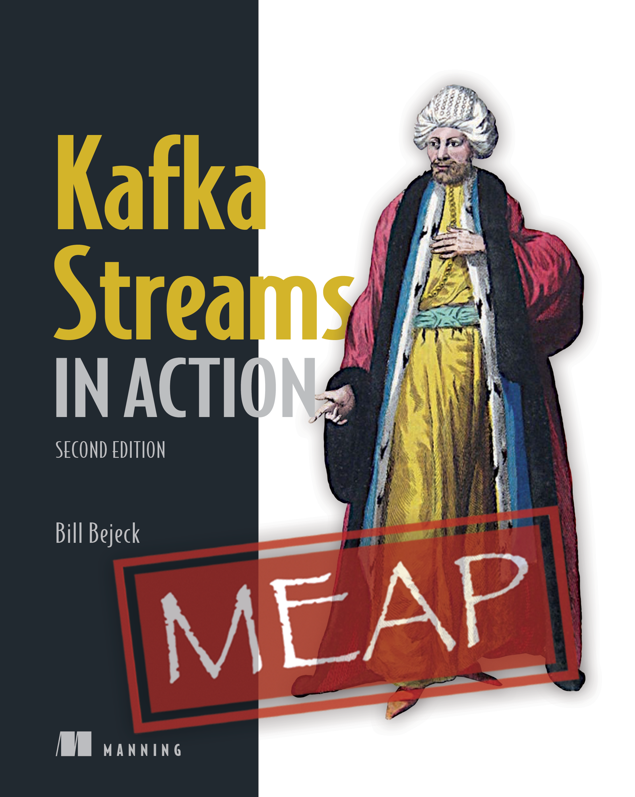

Kafka Streams API
A Step Beyond Hello World
@inponomarev
Our plan
 | Lecture 1.
Lecture 2.
| |
Tables vs Streams
User Location
Tables vs Streams
Number of places visited

Tables vs Streams
Derivative and integral
Martin Kleppmann, “Designing Data Intensive Applications”
Table-table join

Table-Table join

Table-Table join
Table-Table join topology

Rewriting the totalling app using KTable
KTable<String, Long> totals = input.groupByKey().aggregate(
() -> 0L,
(k, v, a) -> a + Math.round(v.getAmount() * v.getOdds()),
Materialized.with(Serdes.String(), Serdes.Long())
);$kafka-topics --zookeeper localhost --describe
Topic:
table2-demo-KSTREAM-AGGREGATE-STATE-STORE-0000000001-changelog
PartitionCount:10
ReplicationFactor:1
Configs:cleanup.policy=compactGet a table of match scores
KStream<String, Score> scores =
eventScores.flatMap((k, v) ->
Stream.of(Outcome.H, Outcome.A).map(o ->
KeyValue.pair(String.format("%s:%s", k, o), v))
.collect(Collectors.toList()))
.mapValues(EventScore::getScore);
KTable<String, Score> tableScores =
scores.groupByKey(Grouped.with(...). reduce((a, b) -> b);$kafka-topics --zookeeper localhost --describe
table2-demo-KSTREAM-REDUCE-STATE-STORE-0000000006-repartition
table2-demo-KSTREAM-REDUCE-STATE-STORE-0000000006-changelogDemo: Combining the amount of bets with the current account
KTable<String, String> joined =
totals.join(tableScores,
(total, eventScore) ->
String.format("(%s)\t%d", eventScore, total));Co-partitioning
Join works

Number of partitions mismatch
Join does not work (Runtime Exception)
Participle algorithm mismatch
Join doesn’t work silently!

GlobalKTable
Replicates everywhere entirely
GlobalKTable<...> global = streamsBuilder.globalTable("global", ...);Foreign Key Joins: join + ForeignKeyExtractor
Operations on Streams and Tables: summary
Types of joins: Table-Table
Types of joins: Table-Table
Types of joins: Table-Table
Types of joins: Stream-Table

Types of joins: Stream-Stream

Our plan
| Lecture 1.
Lecture 2.
| |
Save Timestamped values to RocksDB
WindowKeySchema.java
static Bytes toStoreKeyBinary(byte[] serializedKey,
long timestamp,
int seqnum) {
ByteBuffer buf = ByteBuffer.allocate(
serializedKey.length
+ TIMESTAMP_SIZE
+ SEQNUM_SIZE);
buf.put(serializedKey);
buf.putLong(timestamp);
buf.putInt(seqnum);
return Bytes.wrap(buf.array());
}Quick retrieval of key values for a time range
Demo: Windowed Joins
"Post-scorer" is a player who tries to push the correct bet at the time of changing the score in the match
The time stamp of the bet and the events of the change of account must "almost coincide".

Time, Forward!
KStream<String, Bet> bets = streamsBuilder.stream(BET_TOPIC,
Consumed.with(
Serdes...)
.withTimestampExtractor(
(record, previousTimestamp) ->
((Bet) record.value()).getTimestamp()
));(Time can also be extracted from WallClock and RecordMetadata.)
Demo: Windowed Joins
По событию смены счёта понимаем, какая ставка будет «правильной»:
Score current = Optional.ofNullable(stateStore.get(key))
.orElse(new Score());
stateStore.put(key, value.getScore());
Outcome currenOutcome =
value.getScore().getHome() > current.getHome()
?
Outcome.H : Outcome.A;Demo: Windowed Joins
KStream<String, String> join = bets.join(outcomes,
(bet, sureBet) ->
String.format("%s %dms before goal",
bet.getBettor(),
sureBet.getTimestamp() - bet.getTimestamp()),
JoinWindows.of(Duration.ofSeconds(1)).before(Duration.ZERO),
StreamJoined.with(Serdes....
));Tumbling window
TimeWindowedKStream<..., ...> windowed =
stream.groupByKey()
.windowedBy(TimeWindows.of(Duration.ofSeconds(20)));Source: Kafka Streams in Action image::tumbling-window.png[width="70%"]
Tumbling window
TimeWindowedKStream<..., ...> windowed =
stream.groupByKey()
.windowedBy(TimeWindows.of(Duration.ofSeconds(20)));
KTable<Windowed<...>, Long> count = windowed.count();
/*
* Windowed<K> interface:
* - K key()
* - Window window()
* -- Instant startTime()
* -- Instant endTime()
*/Hopping Window
TimeWindowedKStream<..., ...> windowed =
stream.groupByKey()
.windowedBy(TimeWindows.of(Duration.ofSeconds(20))
.advanceBy(Duration.ofSeconds(10)));Source: Kafka Streams in Action image::hopping-window.png[width="50%"]
Session Window
SessionWindowedKStream<..., ...> windowed =
stream.groupByKey()
.windowedBy(SessionWindows.with(Duration.ofMinutes(5)));
Window Retention time vs. Grace Time

Sometimes you don’t need windows, but Punctuator
 | |
Our plan
| Lecture 1.
Lecture 2.
| |
It’s time to wrap up!
Kafka Streams in Action
 |
|
Kafka: The Definitive Guide
 |
|
Other sources
Communities, conferences
Telegram: Grefnevaya Kafka
Kafka Summit Conference
Conclusions
Kafka StreamsAPI is a convenient abstraction over the "raw" Kafka
To start using, you need to understand stream processing
Technology is being rapidly developed
+ live community, there is a chance to influence the process yourself
- public interfaces change very quickly
That’s all!
Thanks!